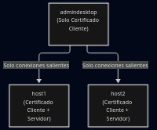
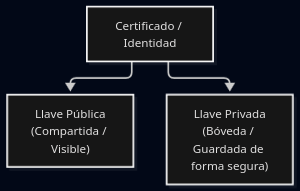
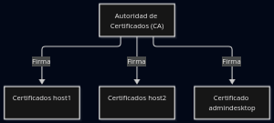

certificados
Los certificados son una forma segura de comunicarnos entre computadoras. A esta forma de establecer la comunicación la llamamos protocolo. Hoy en día existen dos tipos de protocolos ampliamente utilizados; protocolos SSL y TLS.
En esta documentación se hablará exclusivamente del protocolo TLS, que es una versión mas moderna o actualizada del protocolo SSL(capa de sockets seguros). Algunos desarrolladores siguen llamándolos: certificado SSL; aunque en realidad se trata igualmente del protocolo TLS(seguridad de la capa de transporte), con opciones ECC,RSA o DSA.
> Estos últimos son *algoritmos de cifrado.*
Configurando libvirt para TLS
Establecer la infraestructura de virtualización a través de la Capa segura de transporte, es relatívamente sencillo; aunque puede resultar confuso, cuando aún no se está familiarizado con ciertos detalles.
Mediante este documento, se tratará de explicar los pasos involucrados, en el proceso de configuración de libvirt con TLS. Se utilizarán conceptos avanzados y ejemplos. Adaptando los ejemplos directamente, sobre la intraestructura de virtualización, se atenderá el caso en particular.
Lista completa del proceso
Crear certificado de Autiridad de certificados(CA en adelante).
Crear certificado de servidor.
Crear certificado de cliente.
Configuración de demonio libvirt.
Otras referencias.
Concepto central
En esencia, la capa segura de transporte es una forma de comunicarnos entre dos máquina, donde será utilizada una aproximación llamada PKI; infraestructura de llave pública.Es un concepto bastante simple, el cuál involucra siempre a dos computadoras; un cliente establece conexión con otra máquina llamada servidor.

Para la comunicación, TLS usa archivos llamados Certificados; el cliente establece la comunicación con un Certificado de cliente. La computadora que recibe la conexión, hace uso del Certificado de servidor.

Si la necesidad, es comunicar dos computadoras en ambos sentidos, para poder hacer uso del protocolo TLS, habrá que instalar los dos tipos de certificados en los dos equipos.
Nuestro escenario
Aquí subyacen dos servidores virtualizados. El primer servidor; sistema 1, será llamado host1. El segundo; recibe el nombre host2.

En éste escenario, los servidores necesitarán comunicarse puntualmente, el uno con el otro. Por ejemplo, cuando movemos un supuesto, desde el host1 al host2 o vice versa. Para que esto funcione, ambos servidores deben poseer su própio certificado cliente/servidor.
> … término en inglés, para referirse a una máquina virtualizada(guest).

En éste punto, será introducido el concepto servidor administrativo. Desde el servidor administrativo, se llevarán a cabo tareas de administración; como crear nuevos supestos, moverlos entre servidores y reconfigurarlos o borrarlos.
A partir de ahora, su nombre será admindesktop. Únicamente se conectará a los servidores, es decir, no recibirá conexiones desde ellos. Por lo tanto, sólo necesitará el certificado de cliente, o lo que es lo mismo; no contará con el certifidcado de servidor.

Llaves privadas
Como parte de la aproximación PKI, usada en TLS (infraestructura de llave pública), cabe mencionar, que cada certificado debe contar con dos entidades: llave pública y llave privada.
Los archivos de llave privada, son de especial importancia y, deben ser guardados en lugar seguro. Estas llaves permiten a cualquier computadora -con el correspondiente certificado; representarse a sí misma, como la descrita en el própio certificado!!.
Por ejemplo, el servidor host1, tiene ambos certificados: certificado de cliente y servidor. Estos certificados, indican su pertenencia al host1. Por que sólo el host1 tiene la llave privada del par de certificados(cliente/servidor); es el único que puede decir: “yo soy el host1”.
En caso de que una persona no autorizada obtenga el archivo de llave, podría generar su própio certificado y, reclamar la posesión del servidor host1 en su lugar, por lo que potencialmente podría darle acceso al servidor virtualizzado. No es lo que queremos!.
Frimando otros certificados
La posesión de los certificados y sus respectivas llaves privadas, también proporciona un beneficio adicional; de esta forma, se podrán firmar otros certificados. Esto añade una pequeña pieza segura de información criptográfica, indicando la autenticidad, del certificado que está siendo firmado.
Es importante, por que condiciona si una web es de confianza o no. Donde todos los certificados han sido firmados por los otros, o por un certificado central -admindesktop, que se sabe es seguro.
Certificado de autoridad
Mediante esta aproximación, contar con un certificado central, capaz de firmar muchos otros, es considerado como buena práctica de seguridad. También permite su administración, mediante un, razonablemente, simple certificado, comparado con otras alternativas y, es la aproximación usada por libvirt.
Éste certificado central, se refiere al Certificado de Autoridad. Será creado uno, al principio de nuestra configuración TLS, en la próxima sección. Después, usado para firmar cada certificado Cliente y Servidor.